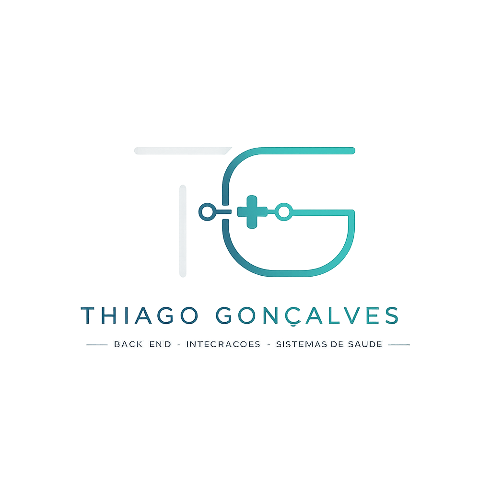

Explorar ProjetosSou desenvolvedor back-end com foco em construção de sistemas robustos, integrações complexas e soluções orientadas a desempenho. Atuo principalmente com tecnologias da InterSystems, utilizando IRIS e Ensemble para desenvolver integrações críticas no setor de saúde.
Tenho experiência direta com protocolos como HL7, comunicação entre equipamentos laboratoriais e sistemas LIS, garantindo confiabilidade e alta disponibilidade dos dados.
Atualmente, estou expandindo meu foco para arquitetura de sistemas e mercado internacional, aprofundando meus conhecimentos em System Design e boas práticas de engenharia.